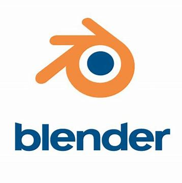
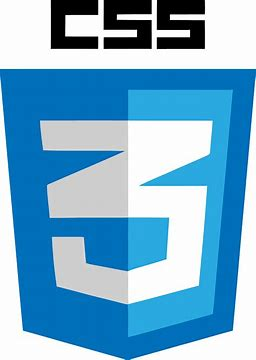
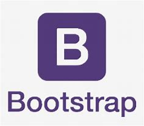
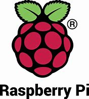

.gif)
I have used python extensively and have made many small scale programs with it. It has been my favorite program to work with so far as it allows me to work with scripts in a wide variety of ways.
Blender is something I gained modest ground in that is until the laptop I had that could run it stopped working. Blender is a 3d animation engine used to make 3d models that work with python and c++. One of these days I plan on going back to it.
Similar to many programmers, I began operating HTML. Honestly, I feel like it's almost definitely the easiest of the programming languages to learn and undoubtedly the most forgiving, at least to me.
CSS is a supportive program that works with HTML and works as a system to format HTML quicker and with greater ease than without. I have used CSS extensively to do nearly all my HTML formatting. I doubt one could argue CSS' usefulness despite not being necessary.

Although I've hardly scratched the surface of Javascript, I can see the inevitable usefulness it possesses. Java is another partner application that works with HTML and it gives the programmer the ability to make their website dynamic using scripts.
While being simalar to python, I am proud to say, I have a more than modest understanding of Java, being able to use it with little difficulty. I would be able to rercreate an of my python project in java, but would need more time to work with it.

Also a scripting language, SQL can be pretty useful at times. I enjoy using it and I find little difficulty in using it.
Though not too special I can easily pull code from bootsrap

One of the main frameworks that I have experience in, Spring is quite useful when building out your website.
Django is the main framework I know and have worked with, Like spring it is useful for building out your websites structure, though I like it's user-database and api system.
I have used Pixil art heavily through out my time coding as I use it to create 8, 32, and 64 bit art work to use for websites and games. It was also used to make the animated logo at the top of the screen.
I practiced Raspberry Pi in my ealier days of programming, when I was studying to get in engineering. I've made multiple LED panels, Some Games, and a mini computer!
Github Remains to be a usful tool in storing and sharing my work, and I am adept in it's functions